By using microcontrollers and circuitry I am able to program various kinds of hardware like motors and sensors. I have worked with Arduino, Phidgets and Raspberry PI was interfaces and have used SSH clients to communicate with remote devices on LAN and WLAN. Robotics is an integral part of most engineering mechanisms that are often automated. In the space industry, for example most machines sent in space rely heavily on autonomity and robotics to perform tasks with accuracy and minimal supervision
I was in a group that created a crane prototype as a part of the York Engineering Competition. We came in the first place.
Wrote code to implement a simple gimbal mechanism using MPU6050 accelerometer and two stepped motors.
Setup of an I2C interface to recieve data from the sensor to Raspberry PI computer
I was part of a team competing in the senior design competition at York Engineering Competition 2019. Our task was to develop a mechanism to lift an object from one point to other over a wall. The constraints of the task were as follows:
Our team was diverse by discipline and it helped us in various aspects of the prototype building. We consisted of two space engineering students (me and Hassan), one mechanical engineering student (John) and an electrical engineering student (Shohon). John and Hassan had more experience in building mechanical parts so they were involved in building and designing the mechanism. I and Shohon had greater experience and expertise in programming so we worked on developing the code that would power the mechanism.
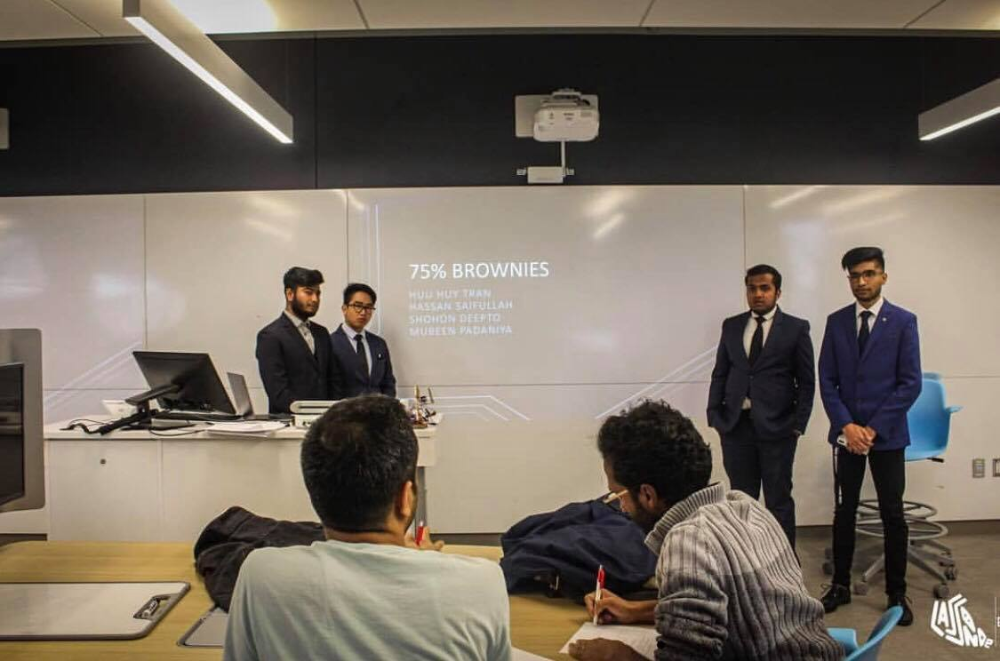The design we decided on a crane based mechanism. Based on the scenario, it seemed a perfect choice as it was a tried and true method and the movements could be easily emulated based on a two axis rotation system. However the challenge was developing the clasping mechanism to grab the object, hold it securely while it is being transfered to the drop location over the barrier. We initially thought of going the default route of a hook and chain system. However this could become more complicated and expensive. Additionally the object didnt have any contraptions to attach a hook. Our final design was inspired from chopsticks by having a pincer type movement where one arm was fixed and other arm was powered by the motor. The arm was angled to present an ideal lateral surface to provide traction to the object. 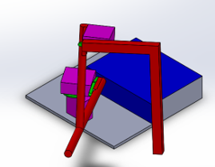 Since minimizing cost was one of the parameters for judgement of design, we reused most of the resources. For example the cardboard used for making the clamping surface was used to create the housing of the electronics. Elastic bands were only used for the moving joints and hot glue was used for static structures. Motors that were used were stepped motors that were powered by the computer for testing to conserve the battery for the competition. Additional ice-cream sticks were used to reinforce the structure.
Two models of the structure were provided by the organizers, which fell in extreme shortage since a lot of teams had to share them. Therefore we decided to make our own testing environment that could be used on demand. Since our mechanism was 100% automated we had to make sure the constant values of rotation were accurate. This was dependent to incessant testing, which was greatly helped by having our own testing environment.
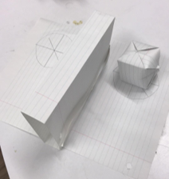The first part of the competition was to complete the tasks using our prototype. Out of all the teams, ours was the only one that had sucessfully completed the task. In-fact it completed it in half the time. It was so accurate that the only variable that could improve it was speed. The only competition we faced was from the team after us. These group of students had a lot of feathers in their cap and had attended several competitions and won. They were clearly more experienced than us, as this was our first such competition. They had implemented a device that was far more complex as it was controlled by inputs from the computer. But due to the size of the environment was small and a significant delay between the device and the interface that made it difficult to control the device. Due to this they weren't able to complete the task.
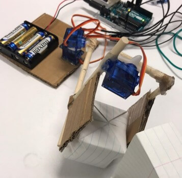Nevertheless, their strong previous experience was reflected in their presentation, which was way better than us. We had much to learn about engineering presentations and our focus was primarily on our prototype. I learned from them that a better way was to create a template before the competition that could be used to create the more formalized and robust presentation. This is what I did for the Ontario Engineering Competition in the future. In the cumulative judgement, we came 1st in the competition. I felt extremely proud of me and my team mates. Our focus on simplicity and functionality, our diverse backgrounds, novel perspectives and planning was the key to our success. We were chosen to represent York University in the Ontario Engineering Competition held in Winters 2020.
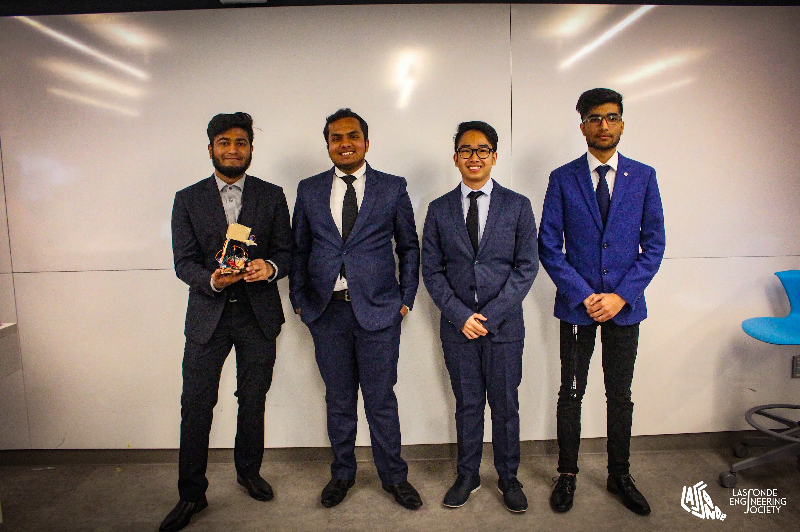Click below to download the code for arduino, presentation and the model of prototype.
The purpose of this task is to employ both the MPU6050 sensor and a stepped motor to develop a gimballed camera mount that provides stability, i.e. relative stiffness to movement. To make this happen, we have to use the WiringPI api to control the servo movements and the MPU6050 example given by Richard Hirst which employs the use of the header files provided by the manufacturer.
The code implemented converts between the degree values of yaw and pitch from the sensor to PWM values. Since each pulse of pwm has a period of 20 hz that has a 1-2 ms duty cycle that defines the movement. In the WiringPI this control is defined by two variables “range” and “clock”. The chosen values for range = 4000 and clock = 98. Using this I was able to determine the what each pwm pulse value in the duty cycle translates for in degrees by the following method.
First we find the length of each value in the range with respect to the period.
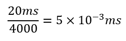
Now we find the what each value of range translates to in degrees. As the servo can be turned from 0 to 180 degrees, these angles correspond linearly with the duty cycle length.
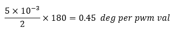
It puts the 0 point on -90 deg value so the Centrepoint is 0. Then using reversing these calculation I can find the exact pwm value that movement corresponds. Since the max value clockwise is 180 which corresponds to 400 value on the range. Therefore the countermove will have the opposite value.
Heres the formula to find movement value.
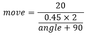
And the counter move value is
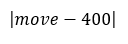
Just for accuracy, I have adapted the MPU6050 demo.dmp included in the example by Richard Hirst, using the header files that calculates ypr values from the raw acceleration values and the gravity vector sourced from the sensor. The original code displayed values in YPR and Euler angles. My code removes all the unnecessary bits for Euler angles and displaying the values. It also moves the looping part out of a loop function and into the main function but using the an infinite for loop. This allows me to use the YPR values in WiringPI code that I earlier made within the main function. Instead of writing constant value to the motor, it uses the YPR value to align itself counteractively. It also checks if the YPR value to be written is within limit -90 to 90. 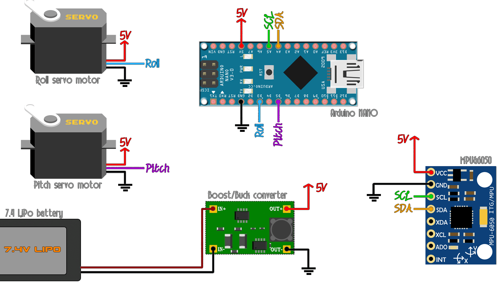
With this lab we were able to connect what we learned about controlling two hardware using RaspberryPI computer to implement a real life solution. The real life problem was camera stability and the solution we tested was a prototype of real life three axes gimbal scaled down to two axes and one sensor. Due to current circumstances (COVID 19), we were unable to test our ideas out on an actual apparatus. This would allow us to interact with the prototype, check for failures, understand failure causes and build iteratively towards the perfect solution. What could certainly help was a virtual lab environment that could emulate such devices. Not the perfect answer since this would still not include all real life problems.
Click below to download the code for plots and calculations
The objective of this task is to be able to connect MPU6050 sensor to RasPi via a I2C interface and develop an executable that can read the data from the sensor. The executable is compiled and transferred from the external computer to RasPi using an SSH channel along ethernet cable.
The Raspian was already flashed on the MicroSD. SSH was enabled by adding a file named ssh to the SD card boot file. We had the network connection of the laptop to an autoconfigured ip address. We connected to the RasPi via the windows terminal. We then changed the RasPi setting to enable the I2C interface.
The RasPi was powered down first Then using jumper wires we connected the SDA,SCL, 5V and GND ports on the sensor to the I2C interface on the RasPi according to configuration seen below. 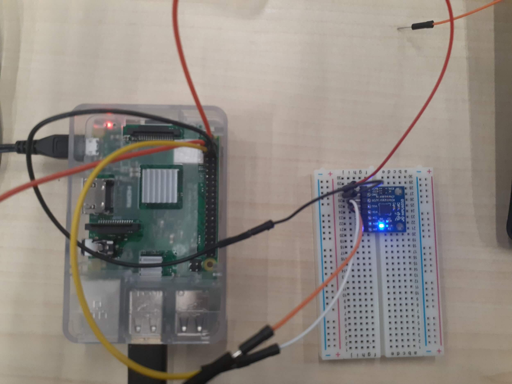
The files from the example code was copied to a blank makefile project in the eclipse using the Cross GCC compiler. We had configure the makefile to use the cross gcc compiler by adding the CXX = arm-gnueabihf-linux. After trying to build the executable it ran into an error in the 3d cpp and .h files due to unavailable binaries. These were excluded from the makefile. The executable compiled successfully. However running it on the RasPi, it failed, citing failure to find the sensor. It was realised because in the code it was using the I2C0 interface instead of the I2C1 address that the sensor was using. This was fixed by changing the default address in MPU6050_Default_Address in MPU6050.h file to use AD1 address for the I2C1 interface found using the command: pi@raspberrypi:~/$ i2cdetect -y 1.
After running the executables the pi outputted each type of values it read from the sensors. The output can be seen below, this changed with changing of the orientation of the sensors.
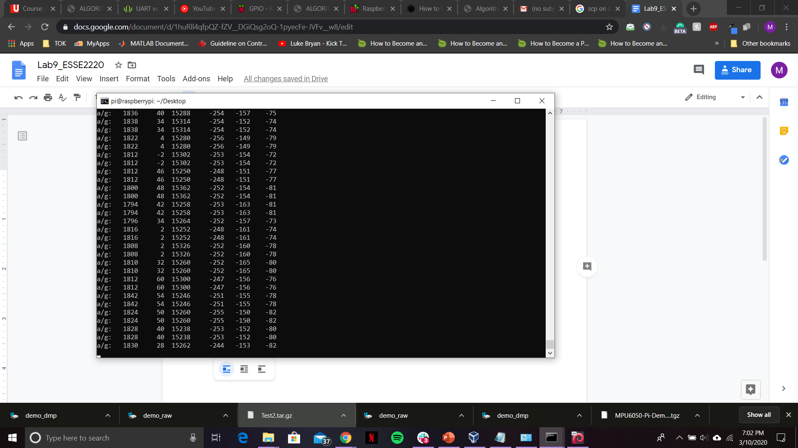
Demo_raw
Running this executable gives the raw values given by the accelerometer and gyroscope. The accelerometer gives the acceleration values in three orthogonal directions, the values are given in g. The gyroscope shows angular velocity in three axes and are given in deg/s-1. These combine to represent the 6 degrees of freedom for the sensor.
Demo_dmp
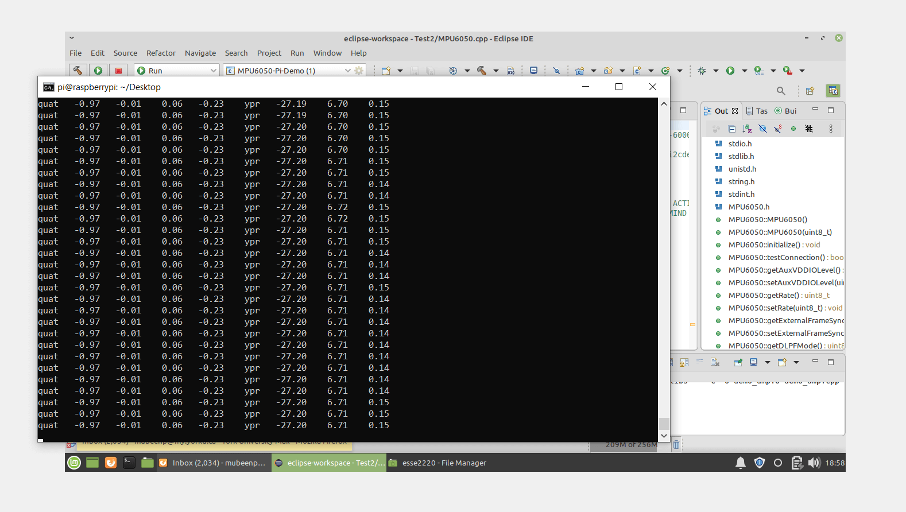
The demo dump file displays the raw data from the sensors in the form of quaternions and ypr frames of motion. This relative to the reference frame provided on the sensor.
Overall the results were adequate. RasPi’s I2C interface was correctly configured to allow a steady data stream from the sensor. The sensor was working fine as it was responding to changes in environment. The final executable was properly built on the Cross GCC compiler without any build issues and correctly read input from the I2C1 port where the sensor was connected to.
Click below to download the code for plots and calculations